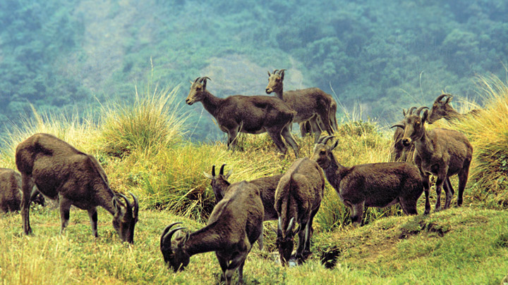

Munnar
Munnar rises as three mountain streams merge - Mudrapuzha, Nallathanni and Kundala. 1,600 m above sea level, this hill station was once the summer resort of the erstwhile British Government in South India. One of the most sought after honeymoon destinations in Kerala, Munnar is replete with resorts and logding facilities that fit a wide rage of budgets. Sprawling tea plantations, picturesque towns, winding lanes and holiday facilities make this a popular resort town. Among the exotic flora found in the forests and grasslands here is the Neelakurinji. This flower which bathes the hills in blue once in every twelve years, will bloom next in 2030. Munnar also has the highest peak in South India, Anamudi, which towers over 2,695 m.Top Station, which is about 32 km from Munnar is at a height of 1700 m above sea level. It is the highest point on the Munnar-Kodaikanal road. Travellers to Munnar make it a point to visit Top Station to enjoy the panoramic view it offers of the neighbouring state of Tamil Nadu. It is among the prime spots in Munnar to enjoy the Neelakurinji flowers blooming over a vast area.
Idukki Arch Dam
Idukki Arch Dam is a double curvature parabolic architectural marvel which stands with its head held high between two huge granite hillocks. These two hillocks are popularly known as the Kuravan Mala and Kurathi Mala. The Kuravan and Kurathi were actually two tribals who were caught red-handed by Lord Rama when they were staring at Sita Devi while she was bathing in the Periyar River. And Lord Rama cursed them to become rocks. And it is believed that they became huge hillocks and the Periyar river started flowing between them. And the locals believe that the Kuravan and Kurathi got moksha when the Idukki Arch Dam was constructed between the two hills. The Idukki Dam offers an awe-inspiring view of the surrounding regions and provides a memorable boat ride through the Periyar River. Because of the mythical and architectural significance as well as the scenic beauty, the Idukki Dam is thronged by tourists all year round
Eravikulam National Park
Eravikulam National Park is the home and sanctuary of the Nilgiri Tahr. This sacred haven for this exotic animal is a relief in a time when different species are disappearing off the face of the planet. Situated in the Devikulam Taluk of Idukki district, people also flock to this park to view the special Neelakurinji flowers that bloom once every 12 years. The next sighting is expected to be in 2030. The park also boasts of hosting South India's highest peak, Anamudi (2695 m), in its southern area. This park is spread over an area of 97 square kilometers and packs tons of fun spots for people to have a good time in. One can see the crowds around the Echo Point, where the natural view and unique setting adds to the eponymous phenomenon. The Rajamalai region of the park is open to the public and from here; the exotic Nilgiri Tahr can be viewed. The Rajamalai region falls under the tourism zone of the area. The other two are the Core area and Buffer area which are both not open to the public. There is a host of trekking options as well in the area. The rare flora and fauna present in the park also attract visitors. Official vehicles take people on trips where one can experience the biodiversity of a high elevation shola-grassland system. One can view rare terrestrial and epiphytic orchids and beautiful wild balsams along with the Nilgiri Langur, leopards and the Indian Bison as well.
Peerumeedu
Experience peace and quiet in Peermedu – a hill station of outstanding natural beauty. Decades ago, Peer Mohammed, a Sufi saint lived in Peermedu, and it was after him the place earned the name Peermedu or the Peer’s valley. Once you are in Peermedu, you would find that there would not be a better place for a saint to reside than the wild and beautiful hills and valleys embodied in an all pervading tranquility. Apart from the wild, Peermedu is a plantation town, where you can find vast stretches of coffee, tea, cardamom, rubber and eucalyptus.Peermedu’s history has a royal touch for it was the summer retreat of the Maharajas of Travancore. The erstwhile Travancore kingdom comprising the southern parts of the present day Kerala state was a noted principality of south India.Ammachikkottaram, the summer residence of Maharani Sethu Lakshmi Bai who ruled the Travancore kingdom as Maharani Regent from 1924 to 1931, is a prominent landmark of Peermedu. The elegant bungalow is today a private residence.
Thekkady Periyar Tiger Reserve

The very sound of the word Thekkady conjures up images of elephants, unending chains of hills and spice scented plantations. The Periyar forests of Thekkady is one of the finest wildlife reserves in India. Spreads across the entire district are the picturesque plantations and hill towns that nestle beautiful trails for treks and mountain walks.It is one of the oldest tiger reserves in the country and the forests of Periyar is embellished by the presence of endangered species including White Tigers. There are over 1965 flowering plants including 171 grass species and 143 species of orchids here. The only south Indian conifer, scientifically known as Podocarpus Wallichianus, grows in the forests of the Periyar Tiger Reserve.More than 60 species are found here which include the Asian Elephant, Bengal Tiger, Indian Bison, Sambar Deer, Indian Wild Dog, Leopard, Barking Deer and the Smooth-Coated Otter which can be sighted during a boat cruise in the Periyar Lake. The Nilgiri Tahr is confined to the higher rocky areas whereas the endangered Lion Tailed Macaque can be found in the interior evergreen forests. Both the Bonnet Macaques and Nilgiri Langur can be seen foraging from the trees near where the boat lands